05
↓
Grundlæggende Indhold
I tema 05 havde vi fokus på videoproduktion hvor vi fik introduktion til premerie pro. Opgaven lød på at vi skulle lave en pilotvideo af en person og om deres passion. Processen bestod af at udarbejde et storyboard, interviewspørgsmål, samt video- og fotoskud inden selve videointerviewet. Lydoptagelsen blev redigeret i Audition efterfølgende og videooptagelserne blev redigeret i Premiere Pro. Jeg har senere brugt disse færdigheder privat på sociale medier. Derudover indeholdte Tema 05 et gruppeprojekt, der handlede om at redesigne en virksomheds hjemmeside, hvor vi skulle benytte alle de færdigheder vi havde fået i de tidligere temaer.
⌄
Premiere pro
Vi interviwet Benjamin Okeo, som har en passion for at producere
musik.
Storyborad:
Benjamin har et studie på vesterbro. Vi følgede hans musik proces og
hvordan han producere et beat.
Vi gjorde brug af 5 skudsregel:
- Close up af Benjamin
- Fokus på handling: close op på hans hænder hvor han laver musik
- Front så man kan se ham i fokus,
- Interview klip: fra side og venstre.
______________________________________________________________________________________________________________
SE PASSION-VIDEO HER
______________________________________________________________________________________________________________
REDESIGN
GL. WEBSITE
I redesign opgaven valgte vi at tage propadel om virksomhed. For at
få det bedst mulige resultat skulle vi igennem en række test
metoder.
5 sekunders test er en metode til
brugerundersøgelse, der hjælper med at måle, hvilken information, og
hvilket indtryk brugerne får inden for de første fem sekunder efter
at have set et design.
Vi lavde også en BERT test.
Derudover lavede vi også research, moodboards og style tiles af det
gamle website.
Forside:
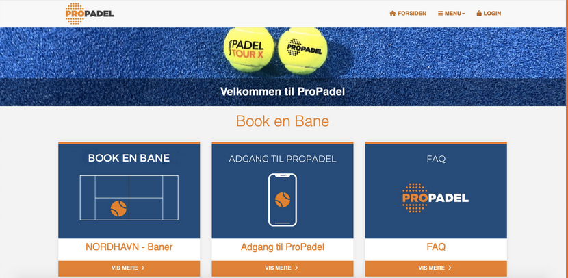Test(5 skeunders test, BERT, Survey):
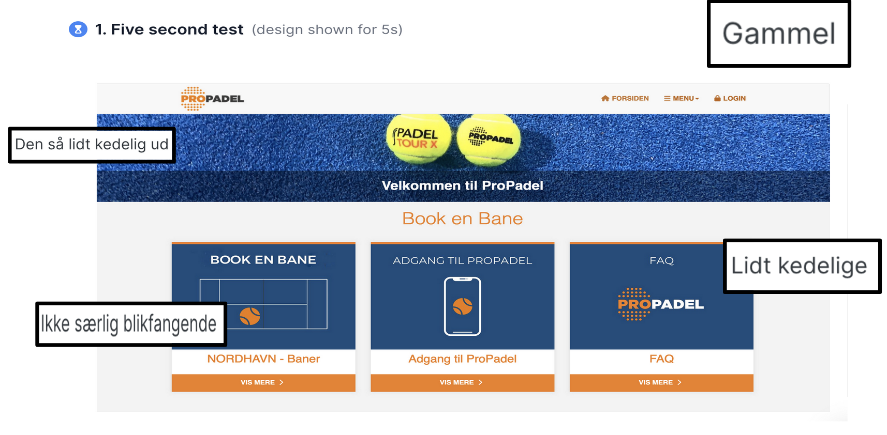 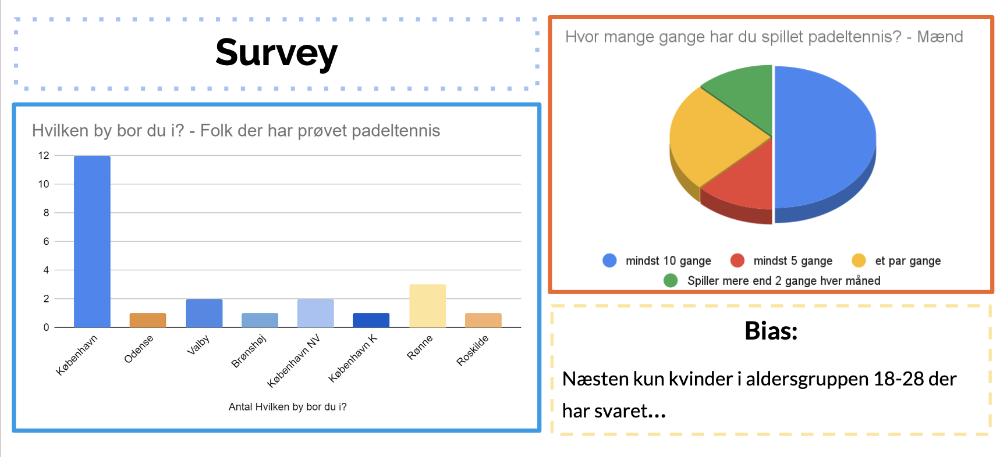wireframe:
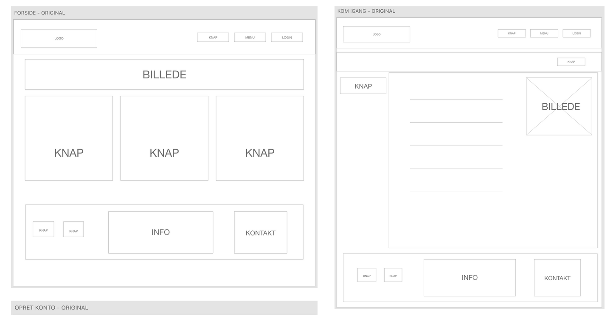 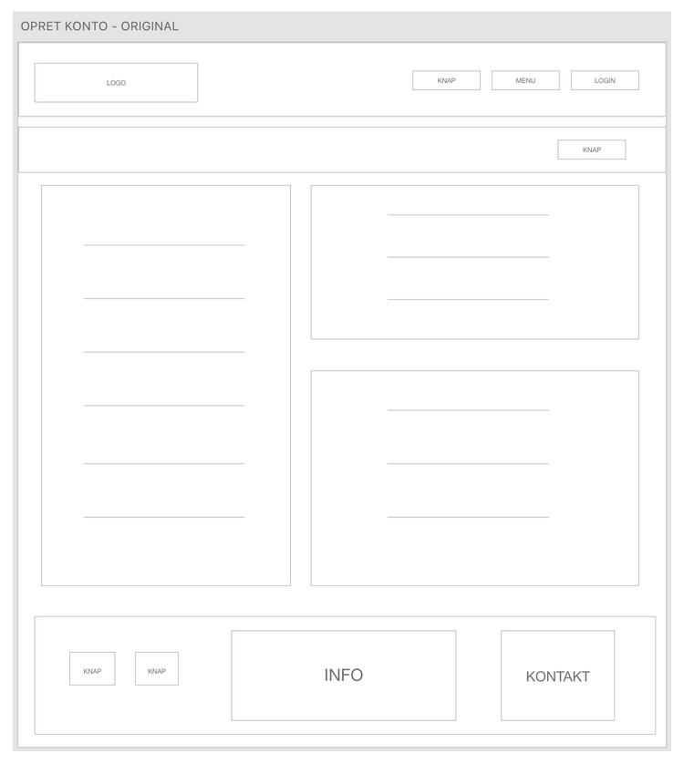Style tile:
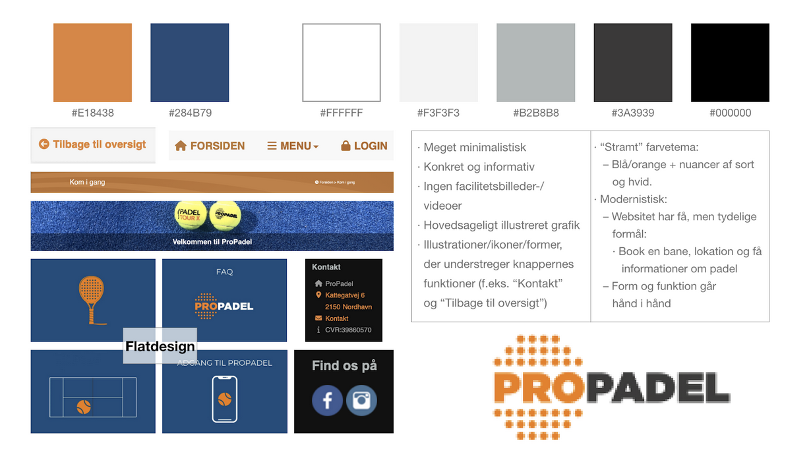_____________________
NYE WEBSITE
Vi var meget gode til at fordele roller og opdatere hinanden i løbet af opgaven. Vi lavede de samme test på det nye design for at se om der var en forskel, hvilket der var. Det lærte os at test giver gode og relevante svar, man kan bruge til design udvikling og blive klogere på brugerne.
Forside:
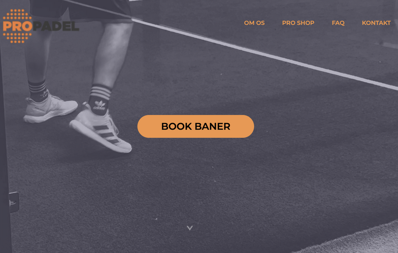Moodbord:
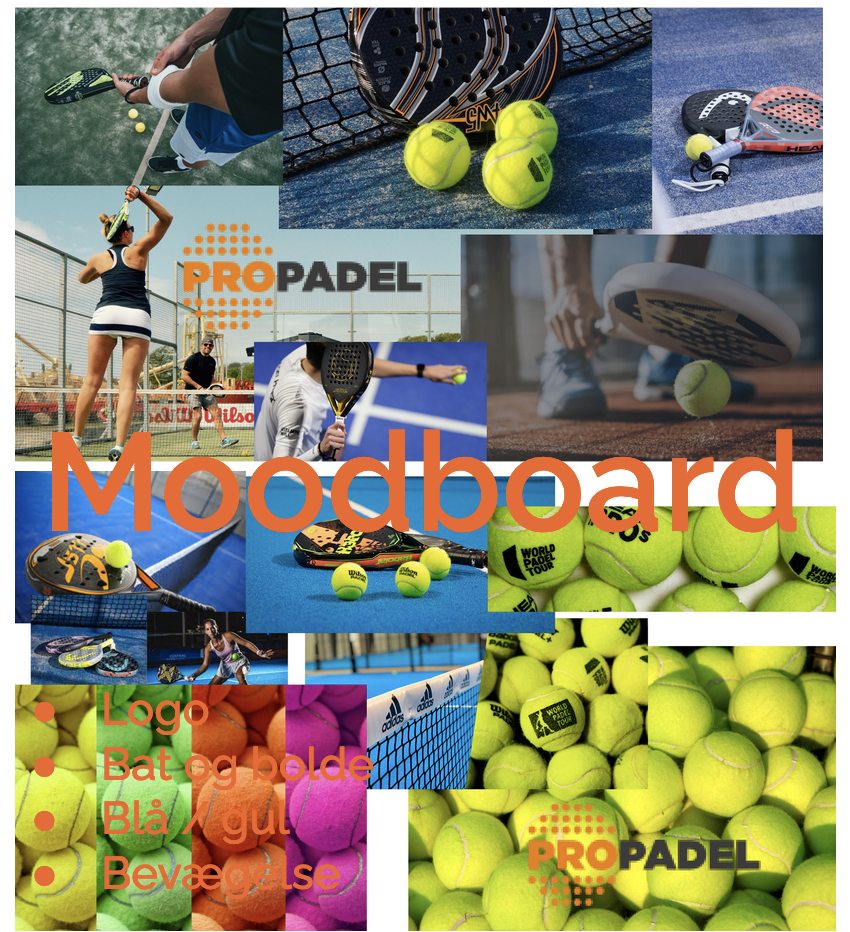Test(5 skeunders test, BERT):
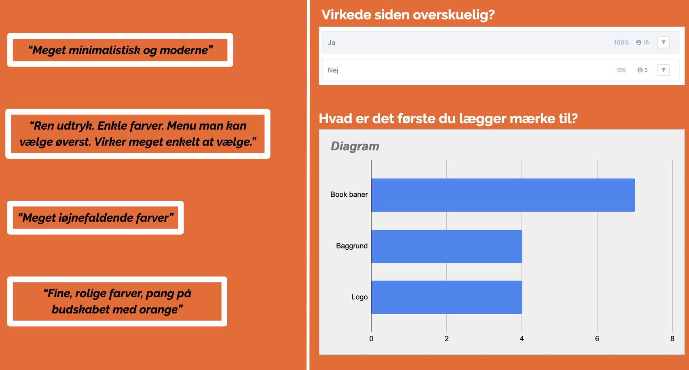Style tile:
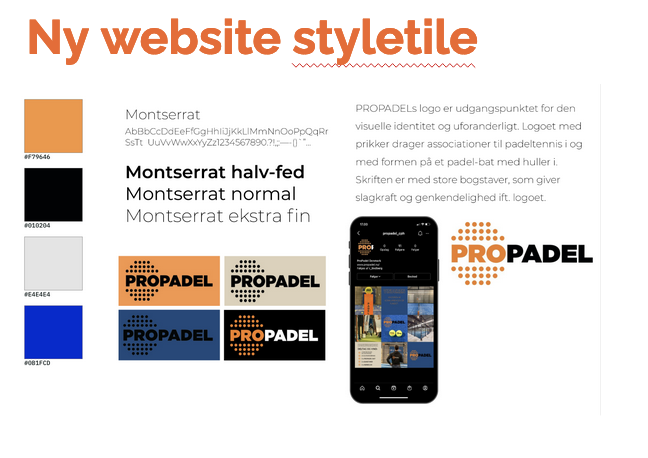Sitemap:
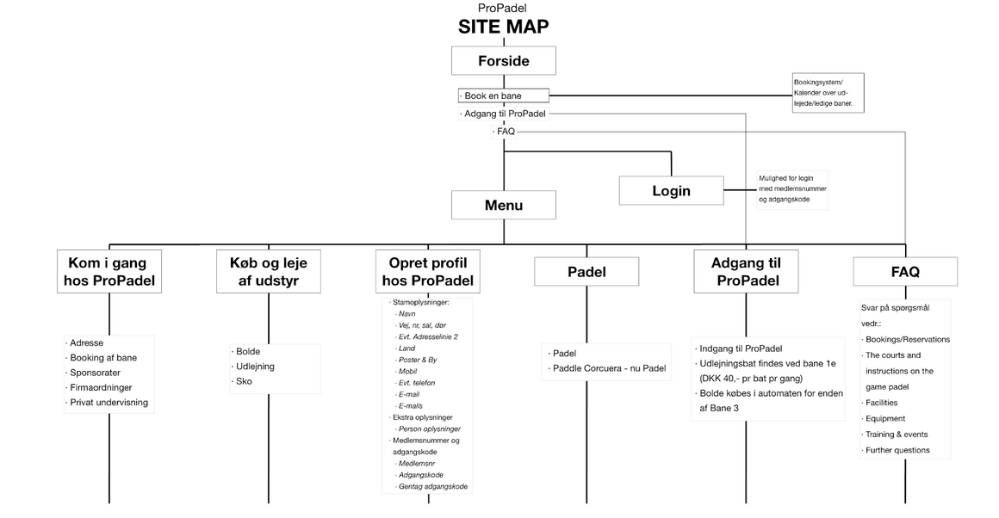
_______________________________________________________________________________________________________________________________________________________
Konklusion
At redigere videoer er altid noget jeg været passioneret om, så dette
tema var jeg spændt omkring. Premiere pro var et nyt redigerings
program jeg ikke har prøvet før, men det var fedt og prøve noget nyt.
Vi havde svært ved at optage lyden separ, ,så vi endte bare med at
bruge lyden der var i klippet. Dette ser jeg frem til at tage med mig
i fremtidlige projekter.
Derudover var det første gang vi arbejdede i grupper, hvor vi alle
havde vores færdigheder inden for Grundlæggende indhold. Med det tog
jeg, en del med mig. Hvordan de andre udføre deres kreative proces.
Jeg synes vi kom med en rigtig god løsning til vores redesign.